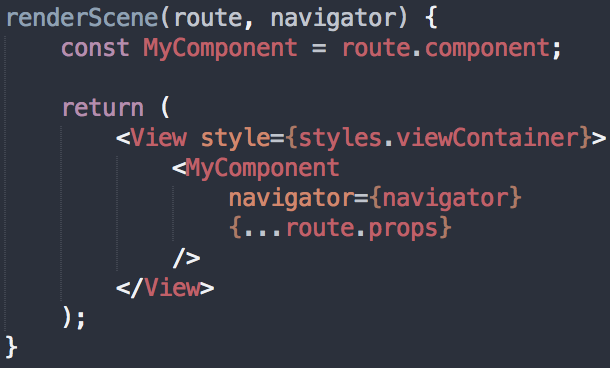
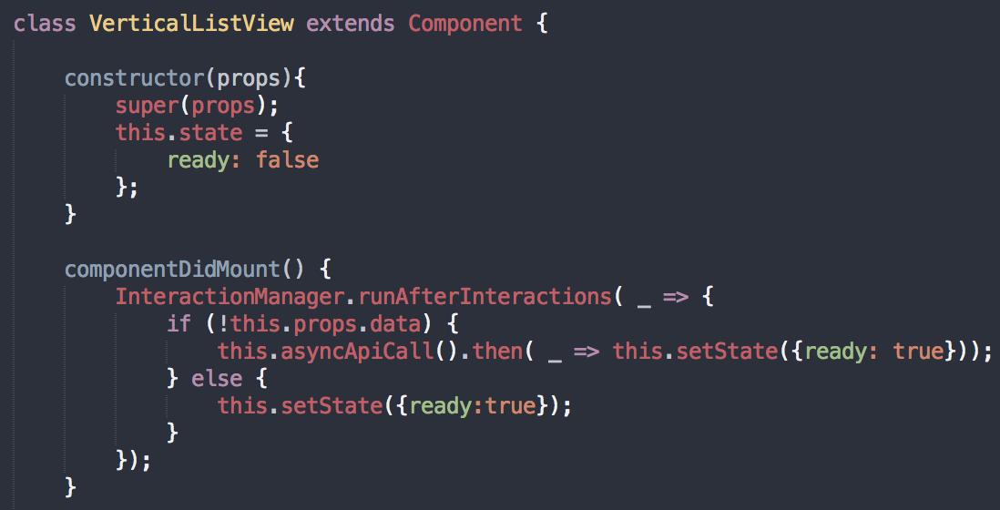

10 Lessons Learned Building The Delivery.com App for Android
Jesse Sessler & Bruno Barbieri
What is Delivery.com?
Delivery.com is an ecommerce platform that empowers the neighborhood economy by enabling customers to order online from over 10,000 of their favorite local merchants.
- Restaurants
- Grocery Stores
- Wine and Spirits Shops
- Laundry and Dry Cleaning Providers
Our Quick History With RN
Start in October with version ~0.11
iOS Only - Integrated into our existing app


Our Quick History With RN
Current Android app is Phonegap
Started Prototyping RN Android App in January
Received approval and started work in April
We're currently in closed Beta with ~300 users
Well Over 50% complete, so far receiving very positive feedback
App Overview
Our "Stack":
- React Native
- Redux
- Android Studio
- Fabric / Crashlytics for crash reporting
- Google Analytics / Leanplum for tracking
Stats:
- 120 Components
- 7 Bridged Native Modules
- 30 Navigation Routes
- 28 Reducers
Demo Time!
10 Lessons We've Learned Along The Way

1. Dev Environment / Setup is huge
Other tabs we keep open:
- RN Facebook Group
- Discord Chat
Helpful Scripts

delivery-com-engineering/react-native-stop-shaking-your-phone
Don't always develop with dev mode = true
2. Navigation Tricks
We're using the legacy Navigator
Experimental was brand new and unstable when we started
Pass navigator into every route
Use InteractionManager.runAfterInteractions for transitions to heavy scenes (docs)
Add a background color to every scene, even if it's white
The Fake Nav Bar Hack
3. Redux vs State
- Redux for app-wide state
- this.state for component state
- Local variables when it doesn't affect rendering
Structure:
Views(redux) → Components
4. Improving Large List Performance
initialListSize and scrollRenderAheadDistance powerful
Tradeoff between rows loaded & time spent
Any other ListView tricks we've used?
5. Sharing Code With Other Platforms
Web, IOS, Android teams all use React / React Native + Redux
Keep most non-component code in a shared Git repository, which is a dependency through npm


We're now sharing developers across teams as well!
6. Use icons over images when possible
react-native-vector-icons has been really easy to use
Fontello for custom icons
7. You'll Find Missing Features, Contribute to RN!
Really good way to learn
You don't need to know Obj C or Java to contribute
We've had 5 Android contributions without knowing Android development
Before you contribute:
- Read contributing guidelines
- Look around the issues / pull requests to see if a fix exists
- Check js.coach for an external package
- Ask the Facebook group or discord if this is a needed feature that no one is working on
- Getting code merged to master in RN core is a time consuming process, be sure it's worth it before you start
8. Parallax and Other Scrolling Tricks
First thought: ScrollView + onScroll + setState
Very choppy, onScroll doesn't fire often enough
Use Animated.event instead


Inspiration:
Programmatic scrolling is easy and performant
measureLayout + findNodeHandle (docs)
9. Orientation
Notes on Orientation
10. Native Modules
Notes on Bridging Native Modules